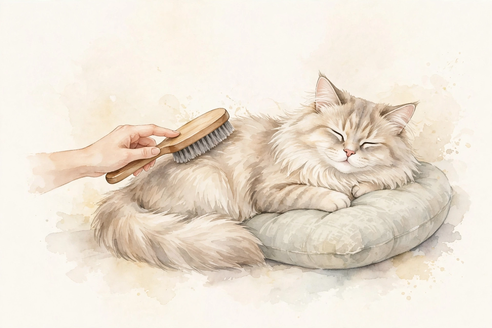

猫のブラッシングの基本

ブラッシングは、抜け毛や毛玉のケアだけでなく、皮膚や被毛の様子を見る機会にもなる毎日のケアです。この記事は一般的な飼育・ケアの情報で、病気の診断や治療のためのものではありません。皮膚の様子に気になる変化があるときは、動物病院に相談してください。
ブラッシングでできること
- 抜け毛を取り除き、毛玉ができにくい状態を保つ手伝いになります
- 皮膚の赤み・かさぶた・できものなど、普段は毛に隠れている様子に気づく機会になります
- 猫が平気であれば、触れ合いの時間にもなります
頻度の目安
短毛の猫は週に1〜2回、長毛の猫は毎日少しずつが目安とされます。換毛期（春と秋）は抜け毛が増えるので、回数を少し増やすと部屋に落ちる毛も減らしやすくなります。時間は長くなくて大丈夫です。猫が嫌がる前に切り上げる方が、結果として続けやすくなります。
嫌がられない始め方
- 猫がリラックスしているときに、短い時間から始める
- 背中やあごの下など、触られて平気な場所からとく
- 終わったらほめる。おやつを組み合わせるのも一つの方法です
- 耳を倒す、しっぽを大きく振る、体をよじる、といったサインが出たら、その日は切り上げる
とき方のコツ
毛の流れに沿って、力を入れずにやさしくとかします。毛玉は無理に引っ張ると皮膚まで引っ張ってしまうので、指で少しずつほぐすか、根元を持って少しずつとくようにします。ハサミで切ると皮膚を傷つけやすいので、大きな毛玉や皮膚に張りついた毛玉は、トリミングサロンや動物病院に相談する方が安全です。
ブラシの種類
- スリッカーブラシ：細かいピンが並んだブラシ。短毛〜長毛の抜け毛取りに広く使われます。皮膚に強く当てすぎないように
- ラバーブラシ：ゴム製で当たりがやわらかく、撫でる感覚に近いのでブラッシングが苦手な猫の入り口に
- コーム（くし）：長毛の仕上げや、毛玉のチェックに
- 獣毛ブラシ：毛にツヤを出す仕上げ用として使われます
まずこれ（PR）

注意
- 精油（アロマオイル）は猫に使わないでください。香りの強いケア用品も、猫が嫌がることがあります。使う場合は無香料のものを選ぶのが無難です。
- 皮膚の赤み、かさぶた、脱毛、かゆがる様子が続くときは、ブラッシングで様子見を続けず、動物病院に相談してください。
おすすめ用品（PR）
この記事のテーマに合わせて選んだ用品です。詳しくは販売ページでご確認ください。

※本記事の商品リンクは楽天アフィリエイトによる広告リンクです。価格や在庫は販売ページでご確認ください。
猫のLINEスタンプ
このサイトの運営者（222キャラ工房）が作っている、猫のLINEスタンプです。毎日の連絡にどうぞ。